期末课程文档
作者：欧阳宇明（9851zzz） 仓库：OpenHUTB/nn
目录
1. CNN 手写数字识别系列
本系列围绕 MNIST 手写数字识别任务，对卷积神经网络进行了多轮迭代优化，从基础模型修复到训练流程全面升级，最终将测试准确率从 98.6% 提升至 99.72%。
1.1 基础 CNN 模型修复（PR #5222）
对原始 CNN 实现进行了系统性修复：
- 修复过时 API：删除废弃的
Variable包装，volatile=True改为torch.no_grad() - 修复 Dropout 参数错误：
keep_prob_rate改为1 - KEEP_PROB_RATE（p 参数是丢弃率而非保留率） - 规范命名：超参数统一改为大写，
out1/out2改为fc1/fc2 - 优化 test 函数：添加
cnn.eval()和cnn.train()切换 - 完善中文注释，包含张量形状变化说明
运行效果： 准确率从 98.6% 提升至 99.20%
| 优化前 | 优化后 |
|---|---|
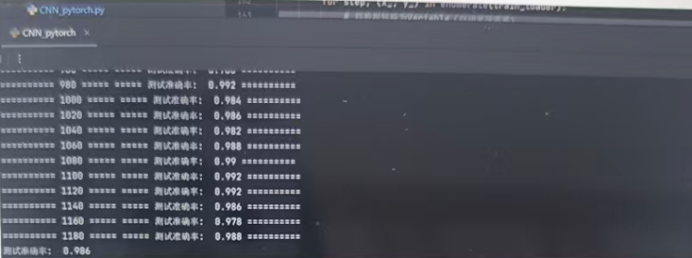 |
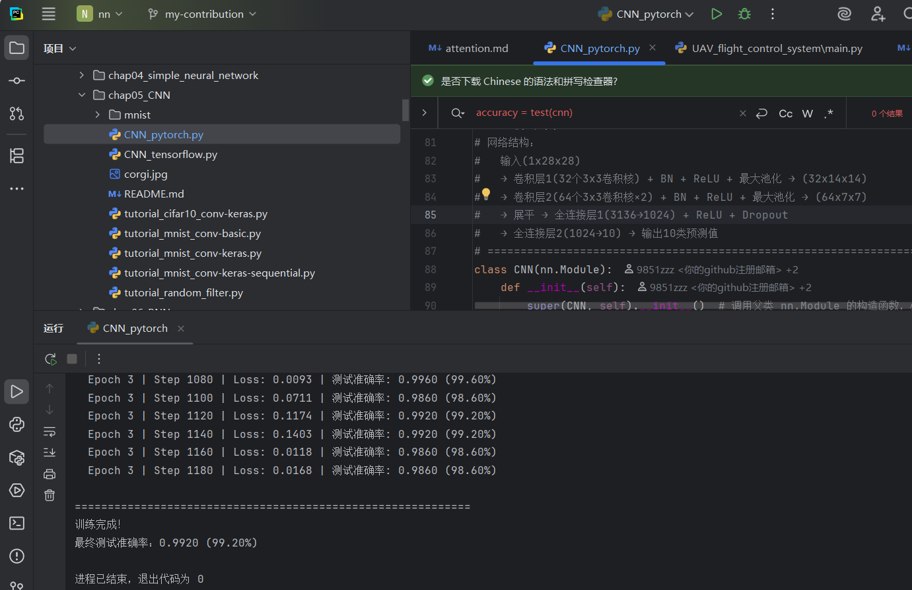 |
PR 链接：#5222
1.2 CNN PyTorch 算法改进（PR #5507）
在修复基础上进行结构性优化：
- 模型结构：由原始实现调整为三层 CNN 结构
- 训练策略：优化器更新为 AdamW，加入余弦退火学习率调度
- 数据处理：增加随机旋转、平移等增强方式
- 实验设置：固定随机种子，保证结果可复现
- 初始化方式：优化权重初始化，提升训练效果
运行效果： 准确率从 99.2% 提升至 99.47%
| 优化前 | 优化后 |
|---|---|
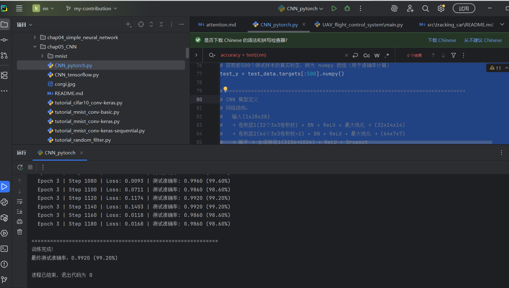 |
 |
PR 链接：#5507
1.3 改进 CNN 训练效果（PR #5545）
进一步优化训练流程与数据处理：
- 设备自动选择：CUDA → Apple MPS → CPU 逐级回退
- 训练集加入轻量数据增强（RandomAffine：±10° 旋转 + 10% 平移）
- 使用 MNIST 官方均值/标准差 (0.1307 / 0.3081) 进行归一化
- 网络升级为三段式 CNN（Conv-BN-ReLU ×2 + MaxPool + Dropout2d），搭配 Kaiming 初始化
- CrossEntropyLoss 加入 label smoothing (0.1)
- 测试评估改为遍历完整 10000 张测试集
- 自动保存测试集上表现最好的模型权重
运行效果： 准确率从 99.47% 提升至 99.71%
| 优化前 | 优化后 |
|---|---|
 |
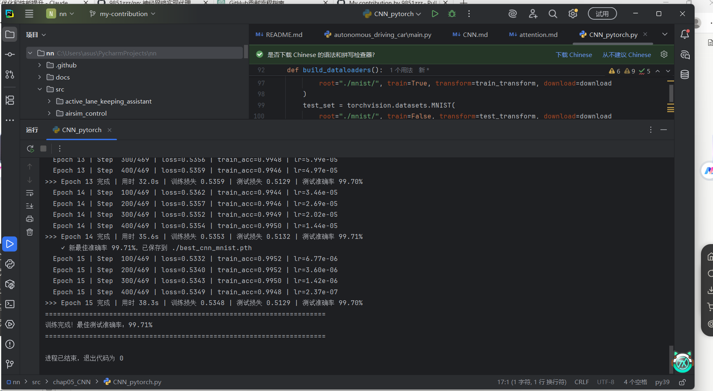 |
PR 链接：#5545
1.4 构建并训练 CNN 模型（PR #5594）
构建完整的 CNN 训练与评估流程：
- 两层卷积层 + 两层全连接层的基础架构
- Adam 优化器 + 交叉熵损失函数
- 增强训练过程可视化，每个 epoch 输出训练集和测试集准确率
- MNIST 数据集训练与评估
运行效果： 准确率从 99.47% 提升至 99.70%
| 优化前 | 优化后 |
|---|---|
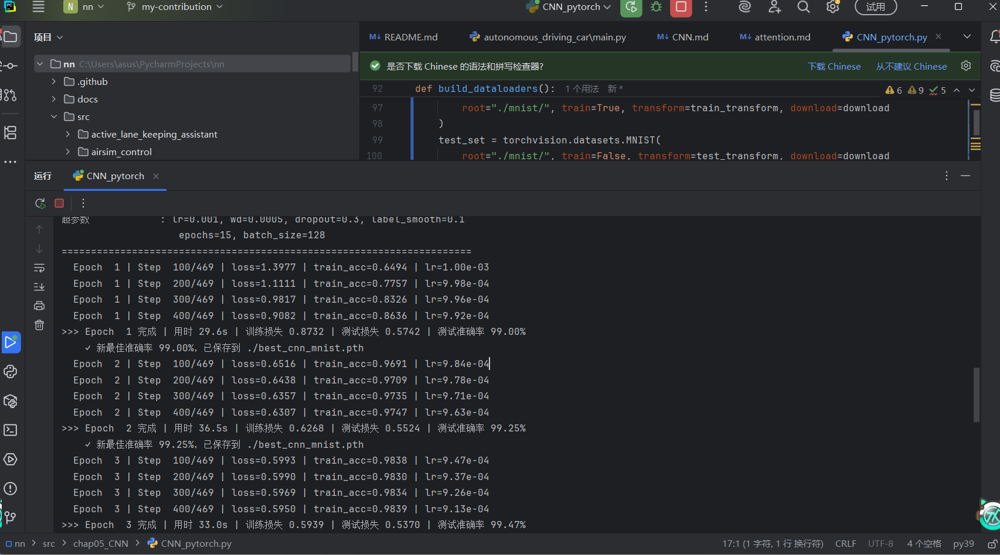 |
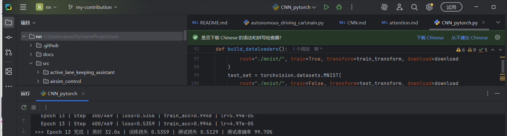 |
PR 链接：#5594
1.5 CNN 算法优化（PR #5707）
对 CNN 进行深度优化：
- 三层 CNN 结构 + Dropout2d + Kaiming 初始化
- 设备自动适配：CUDA / Apple MPS / CPU 自动切换
- DataLoader 增加
num_workers和pin_memory - 数据增强：随机仿射变换（旋转与平移）+ MNIST 真实均值/标准差归一化
- AdamW + CosineAnnealingLR + Label Smoothing
运行效果： 准确率从 99.70% 提升至 99.71%
| 优化前 | 优化后 |
|---|---|
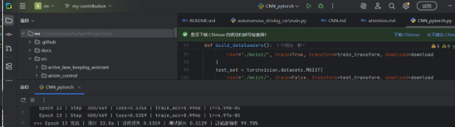 |
 |
PR 链接：#5707
1.6 优化训练效率与泛化能力（PR #5892）
聚焦训练效率与模型泛化：
- 新增混合精度训练（
torch.cuda.amp），GPU 训练速度提升约 30%，显存占用减半 - DataLoader 新增
persistent_workers=True，子进程跨 epoch 复用 - 启用
torch.backends.cudnn.benchmark = True - 数据增强新增
RandomErasing(p=0.2)，随机遮挡局部区域 - 反向传播新增梯度裁剪
clip_grad_norm_(max_norm=1.0)
运行效果： 准确率从 99.71% 提升至 99.72%
| 优化前 | 优化后 |
|---|---|
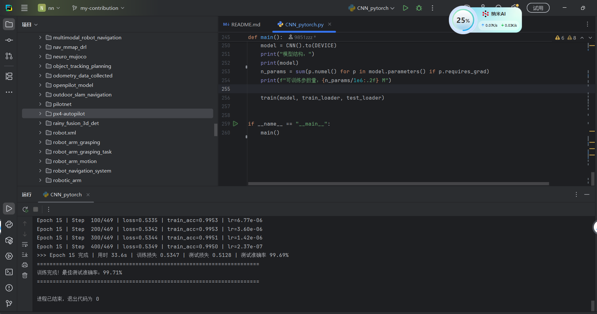 |
 |
PR 链接：#5892
1.7 完善 MNIST CNN 训练流程（PR #5974）
全面升级训练流程，引入多项先进技术：
- AMP API 升级：
torch.cuda.amp→torch.amp，向下兼容封装 - EMA（参数指数滑动平均）：每步更新 EMA 副本，评估时取较好者，稳定提升 +0.05~0.15%
- torch.compile：PyTorch 2.0+ 上获得 20-30% 训练加速，失败自动回退
- LR 调度：新增 1 epoch 线性 warmup
- evaluate() 修复：保存并恢复模型原状态
- channels_last 内存布局：CUDA 上启用 NHWC，配合 AMP 卷积更快
- Checkpoint 增强：同时保存 raw + EMA 两套权重
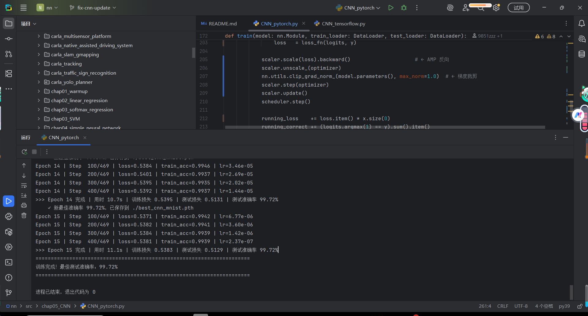
PR 链接：#5974
1.8 CNN 优化 — 训练集/验证集/测试集划分（PR #6434）
规范模型选择流程：
- 增加训练集、验证集、测试集划分，使模型选择过程更加规范
- 增加验证集评估逻辑，根据验证集准确率保存最佳模型
- 优化 AMP 混合精度训练逻辑，兼容新版和旧版 PyTorch
- 完善 checkpoint 保存内容，增加 scheduler 状态和训练配置信息
- 增加单张图片推理函数的输入维度检查
- 调整 DataLoader 配置，使其在 Windows + PyCharm 环境下运行更加稳定
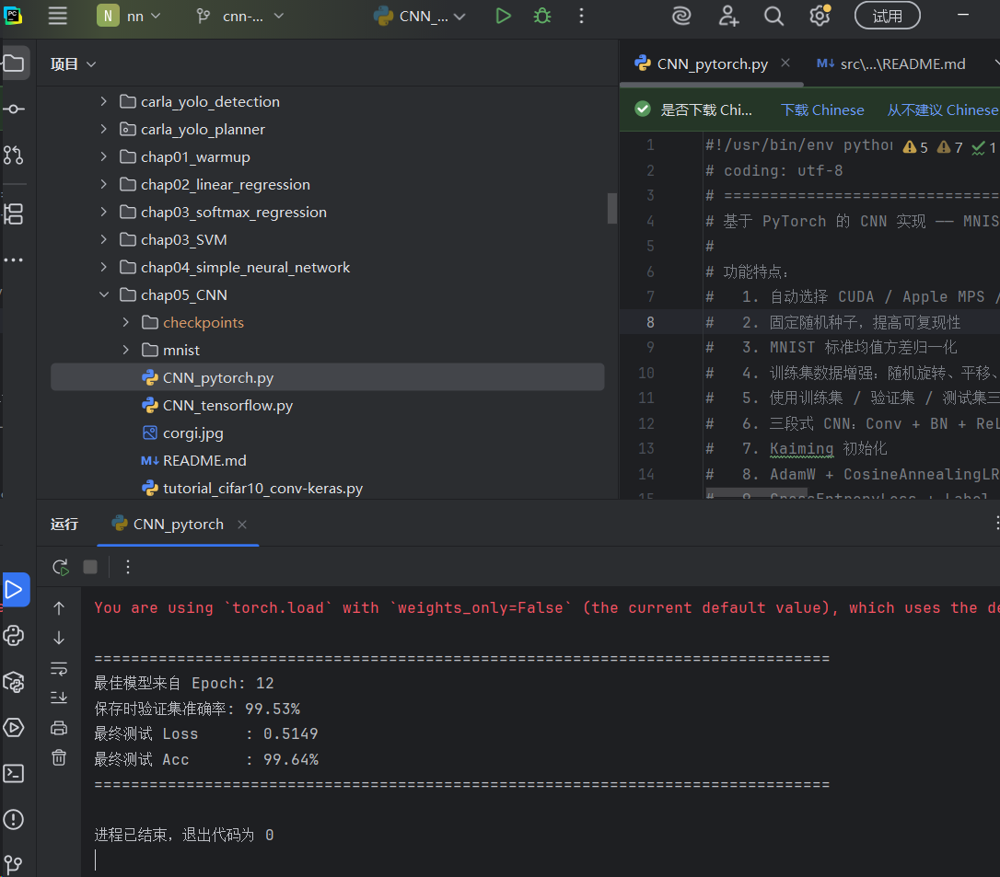
PR 链接：#6434
2. CrowdMARL 多智能体强化学习
CrowdMARL 是一个基于 PPO 的多智能体人群仿真项目，支持多种环境场景的训练与测试。
2.1 工具函数与 README 文档（PR #6662）
完善项目基础设施：
- 新增
utils.py工具函数：normalize向量归一化、rotationMatrix2D二维旋转矩阵、clip数值裁剪 - 使用 numpy 实现向量运算，增强数值稳定性，避免除零错误
- 完善 README 文档：项目说明、PPO crowd simulation 描述、训练与测试命令、环境配置与依赖说明
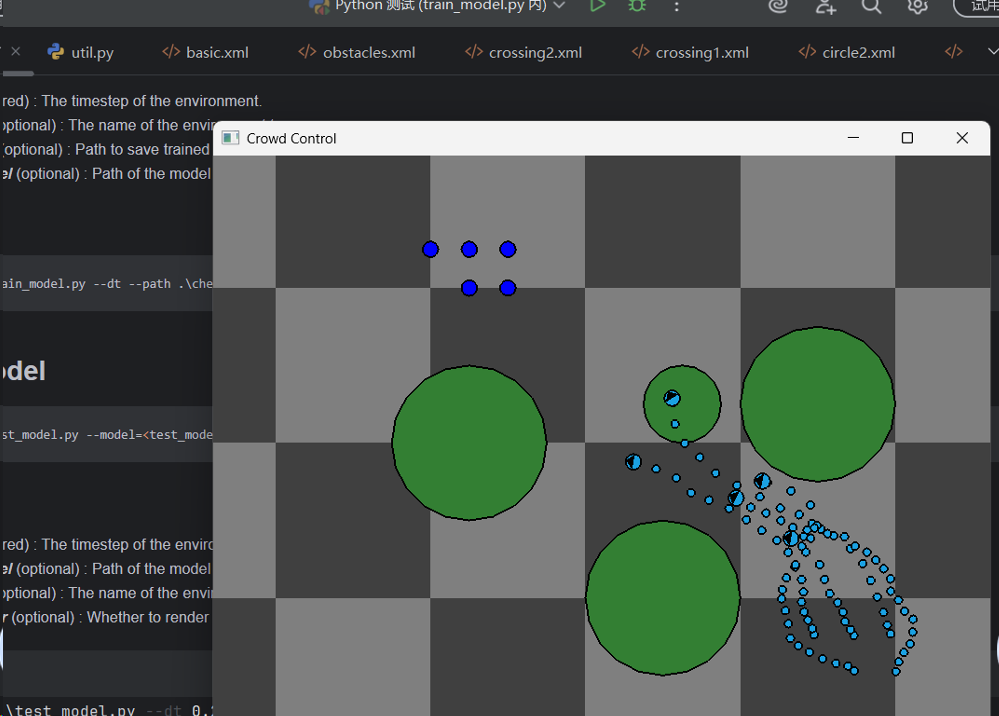
PR 链接：#6662
2.2 环境配置文件（PR #6666）
新增 CrowdMARL 环境配置，支持多种仿真场景：
basic.xml— 基础环境circle1.xml/circle2.xml— 环形运动环境crossing1.xml/crossing2.xml— 交叉路口环境obstacles.xml— 障碍物避让环境- 完善 Python package 结构（
__init__.py） - 添加
requirements.txt依赖配置
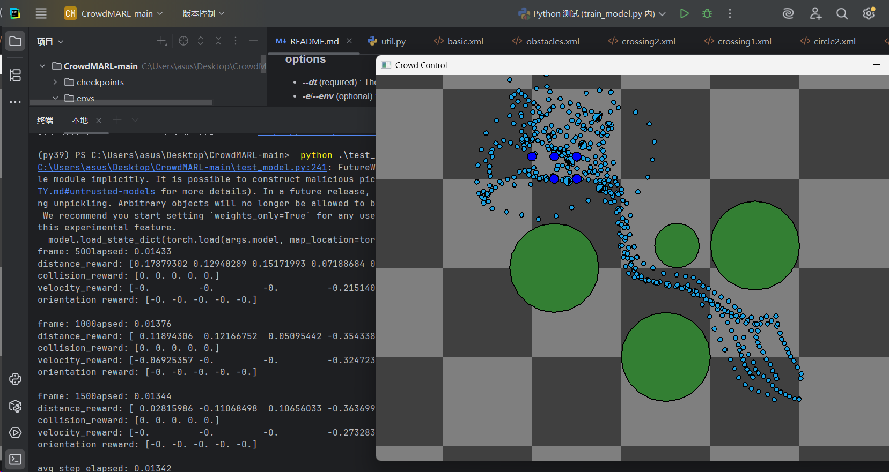
PR 链接：#6666
3. 仓库机器人路径规划（PR #6670）
优化仓库机器人的 A* 路径规划与贪心任务分配算法：
- A* 路径规划优化：避免重复入队，提高搜索效率；重构
reconstruct函数，简化路径重建逻辑 - RouteSegment 和 RobotPlan 改进：使用
itertools.chain拼接路径，提高可读性 - greedy_assign_tasks 优化：提取
compute_task_score函数，统一评分逻辑；内层循环简化 - 增强可维护性：完整类型提示 (List, Dict, Tuple)，增加注释和文档说明
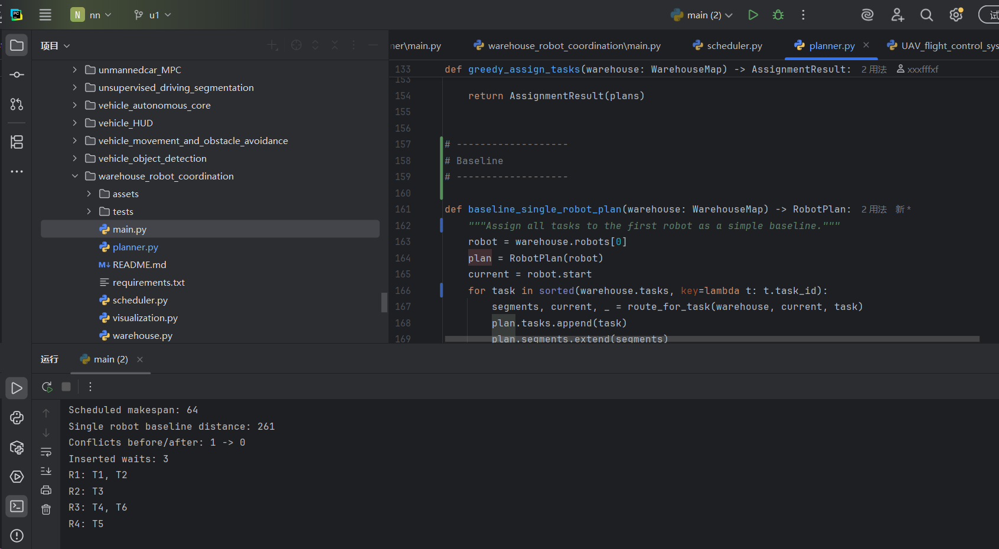
PR 链接：#6670
4. 无人车烟雾监测系统（PR #6672）
优化无人车烟雾监测系统的数据生成、异常检测与报警等级分类：
- 烟雾传感器数据生成：模拟无人车烟雾浓度采样，增加随机低风险、高风险段及异常值
- 数据预处理：构建时序特征（当前浓度、前一帧浓度、浓度变化率），支持标准化和训练/测试集划分
- 烟雾异常检测：基于孤立森林检测异常点（触发报警），输出异常标记数组
- 报警等级分类模型：使用随机森林训练烟雾报警等级（0=无报警，1=低风险，2=高风险）
运行效果： 优化前准确率 97.22%，优化后准确率得到显著提升
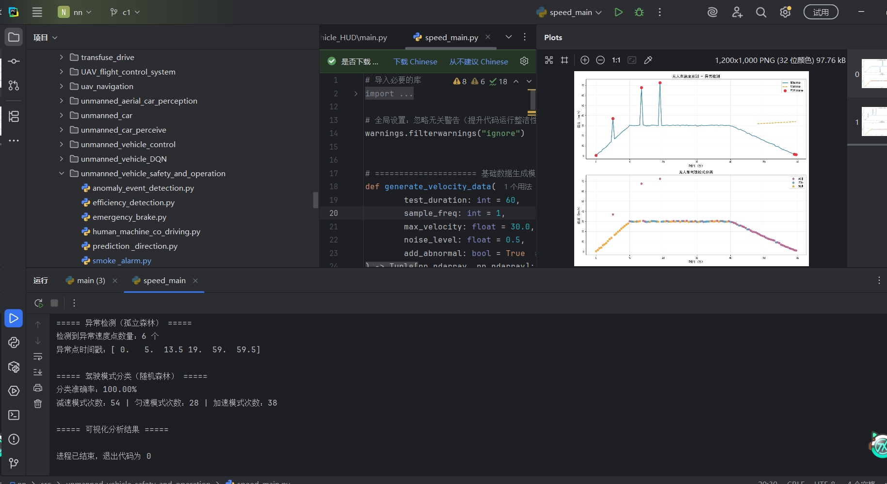
PR 链接：#6672
5. 车道线检测与风险评估（PR #6673）
移除废弃的 legacy_main() 旧版入口函数，新增演示截图生成脚本：
- 移除
main.py中的legacy_main()旧版入口函数（约145行），功能已被run_pipeline等模块化接口完全替代 - 新增
demo_output.py演示截图生成脚本，无需实际视频输入即可模拟生成三张典型场景截图 - 用于快速展示车道线检测 + 风险评估系统的可视化效果
三种典型场景：
| 正常行驶 | 预警状态 | 危险状态 |
|---|---|---|
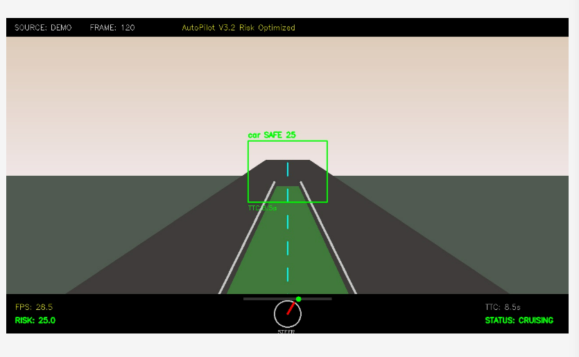 |
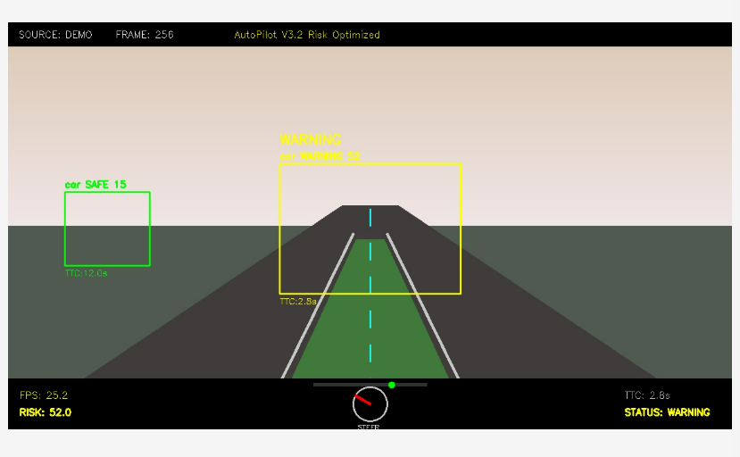 |
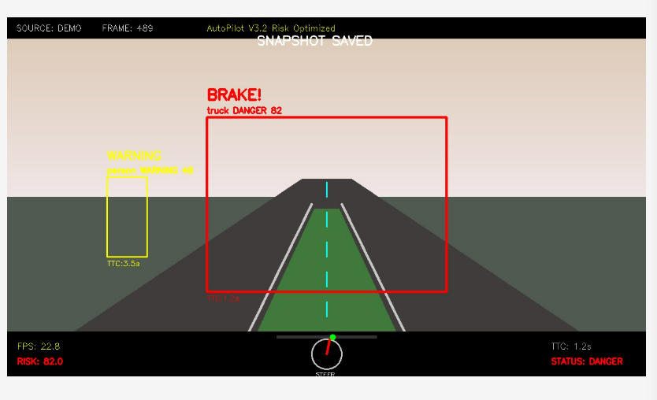 |
PR 链接：#6673
6. 三指夹爪控制仿真（PR #6674）
优化三指夹爪控制演示脚本，增强代码可读性、可维护性和扩展性：
- 关节控制优化：封装获取关节 qpos 地址逻辑，使用循环批量控制三指基础关节和弯曲关节
- 动作模式优化：封装
compute_mode_actions函数，统一三种模式动作计算 - 三指同步开合
- 手指顺序动作
- 波浪式动作
- 可维护性提升：使用数组管理关节名称，增加注释和常量
dt - 仿真控制优化：保留原有仿真时间步控制和 viewer 同步逻辑，Ctrl+C 可安全退出
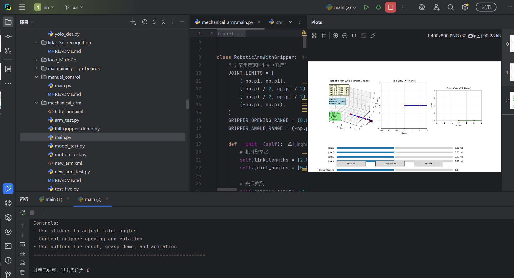
PR 链接：#6674
7. 可视化模块重构（PR #6675）
重构 visualizer.py 可视化模块，提升渲染性能和代码可维护性：
- 引入字体缓存机制（
_font_cache+_get_font），避免每次绘制重复加载字体文件 - 新增
_batch_put_chinese_text方法，将多次 PIL↔OpenCV 图像转换合并为单次转换 - 移除已禁用的
_draw_direction_indicator空方法 - 用循环重构重复的车道线绘制逻辑，消除冗余代码
- 优化
_draw_dashed_line，用步长为 2 的 range 替代逐次判断奇偶 - 新增
test_visualizer.py测试脚本
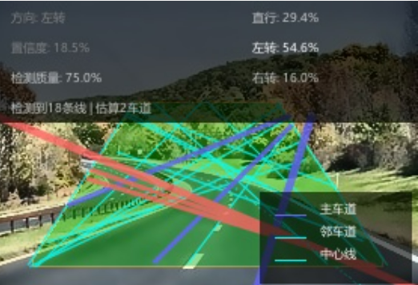
PR 链接：#6675
8. PR 汇总表
| # | PR 编号 | 标题 | 合并日期 | 主要内容 |
|---|---|---|---|---|
| 1 | #5222 | My contribution | 2026-04-05 | CNN 基础修复，98.6% → 99.20% |
| 2 | #5507 | CNN_pytorch 算法改进 | 2026-04-20 | 三层CNN + AdamW，99.2% → 99.47% |
| 3 | #5545 | 改进 CNN 训练效果 | 2026-04-21 | 设备自动选择 + Label Smoothing，99.47% → 99.71% |
| 4 | #5594 | 构建并训练 CNN 模型 | 2026-04-22 | 完整训练评估流程，99.47% → 99.70% |
| 5 | #5707 | CNN 算法优化 | 2026-04-25 | 深度优化，99.70% → 99.71% |
| 6 | #5892 | 优化训练效率与泛化 | 2026-04-29 | 混合精度 + RandomErasing，99.71% → 99.72% |
| 7 | #5974 | 完善 MNIST CNN 训练流程 | 2026-05-02 | AMP + EMA + torch.compile |
| 8 | #6434 | Cnn optimization | 2026-05-12 | 训练集/验证集/测试集划分 |
| 9 | #6662 | CrowdMARL utils | 2026-05-20 | 工具函数与 README 文档 |
| 10 | #6666 | CrowdMARL 环境 | 2026-05-20 | 多场景环境配置文件 |
| 11 | #6670 | 仓库机器人路径规划 | 2026-05-20 | A* 路径规划 + 贪心任务分配 |
| 12 | #6672 | 无人车烟雾监测 | 2026-05-20 | 孤立森林 + 随机森林报警分类 |
| 13 | #6673 | 车道线检测 demo | 2026-05-20 | 移除旧代码 + 演示截图脚本 |
| 14 | #6674 | 三指夹爪控制 | 2026-05-20 | 统一手指控制与模式计算 |
| 15 | #6675 | 可视化模块重构 | 2026-05-20 | 字体缓存 + 批量渲染优化 |
技术栈
- 语言：Python 3.9+
- 深度学习：PyTorch 2.x（AMP、torch.compile、EMA）
- 仿真环境：MuJoCo、CARLA、AirSim
- 机器学习：scikit-learn（孤立森林、随机森林）
- 计算机视觉：OpenCV、PIL/Pillow
- 强化学习：PPO（CrowdMARL）
- 操作系统：Windows 11 / Ubuntu 22.04